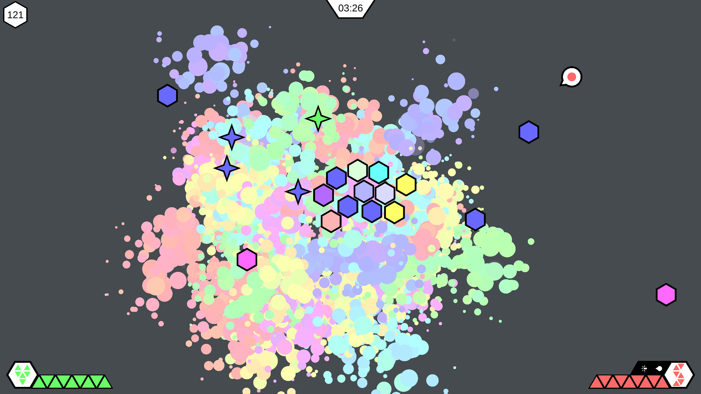

PONGDEMONIUM
Pongdemonium is a two-player party game, which sees players go head-to-head in rounds of Pong, but with a twist: each round, crazy new mechanics are added to shake up the game.
Pongdemonium is currently being developed solo as a side project outside of university, and has been in development for ~6 months.
In the project, I've handled all aspects of design, programming, & art.
There's currently no available builds, but check back shortly for more news!
ELLE'S ADVENTURE
Elle's Adventure is a single-player adventure game in which players explore a construction yard learning about safe construction and help various members around the construction site with their odd jobs.
Elle's Adventure was developed with three other students across the span of 13 weeks as a part of a university project for the unit IGB200, in partnership with Awesome Women in Construction.
In the project, I was responsible for Game & Level Design.
Play it here.

DUNGEONS OF TAERSPYRE
Dungeons of Taerspyre is an ARPG prototype about a necromancer's quest to escape from a castle's dungeon, which sees players raising an army of the dead to destroy waves of enemy forces.
Dungeons of Taerspyre was developed individually across the span of 5 weeks as a part of a university project for the unit IGB190, based on a small provided project.
In the project, I handled all aspects of design, programming, & art.
Play it here.

HUNTED VR
Hunted VR is a VR stealth game adapting the popular reality TV series Hunted. It sees players escaping from a train station by avoiding police & security caneras, as well as using objects in the environment to their advantage.
Hunted VR was developed with two other students as a part of a university project for the unit IGB388. We also collaborated with students at BUAS in The Netherlands who helped with developing the pitch, and with Banijay Benelux, who produce Hunted.
In the project, I was responsible for systems design & some aspects of programming.
There's currently no available builds.
PAINT-EM-UP
Paint Em Up is a single-player arena shoot-em-up in which players fight waves of enemies by switching colours to match their enemies, and then blasting them. Players can also release powerful abilities to wipe out waves of enemies.
Paint-em-up was developed individually across the span of 5 weeks as a part of a university project for the unit IGB100.
In the project, I handled all aspects of design, programming, & art.
Play it here.
